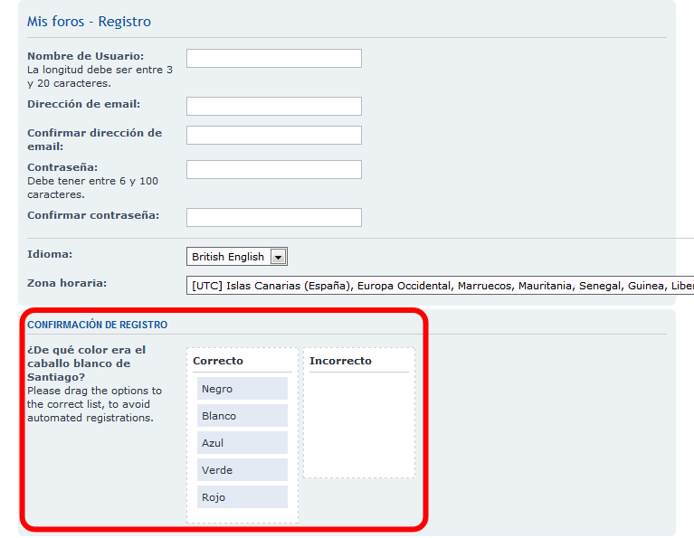

Estos ejercicios corresponden a una versión antigua de phpBB. No están actualizados a versiones más actuales porque desde el curso 2014/15 no estoy trabajando en clase phpBB ya que estoy dedicando más tiempo a otras aplicaciones. He mantenido estos ejercicios en los apuntes por si le pueden servir a alguien.
En esta lección se proponen soluciones detalladas de los ejercicios de phpBB (2). Se recomienda intentar realizarlos primero sin recurrir a estas soluciones.
phpBB (2) A1 - Acceder desde otros ordenadores
Incluir en httpd.conf el alias correspondiente:
<IfModule alias_module>
# 2013-01-30. Alias para acceder al foro sin necesidad de poner la ruta completa:Alias /phpbb "ruta"
<Directory "ruta">
Options Indexes FollowSymLinks Includes ExecCGI
AllowOverride All
Require all granted
</Directory>
ScriptAlias /cgi-bin/ "C:/xampp/cgi-bin/"
</IfModule>
phpBB (2) A2 - Avatares
En este ejercicio se trata de configurar phpBB para que los usuarios puedan incluir avatares en su mensajes.
Los avatares son imágenes de tamaño reducido que se muestran junto al nombre del usuario, para facilitar la identificación de la autoría de los mensajes.
phpBB permite tres tipos de avatares:
local: el administrador define los avatares a disposición de los usuarios. Los avatares están organizados en galerías de avatares.
upload: cada usuario puede subir su propio avatar (el administrador define el tamaño máximo en píxeles y en KB).
remote: el avatar puede ser una imagen situada en cualquier servidor (en este caso no hay tamaño máximo de avatar).
Galería de avatares (local) (1)
Descargar este grupo de dibujos de animales: Galería de avatares: dibujos de animales y descomprimir el archivo zip en la carpeta /images/avatars/gallery (por comodidad, las imágenes deben estar en una carpeta llamada dibujos_animales).
Entrar en phpBB como administrador admin y en el Panel de control del administrador elegir la pestaña General > Configuración de avatar.
Marcar solamente las casillas de verificación Habilitar avatares y Habilitar galería de avatares.
En el Panel de control del usuario elegir la pestaña Perfil > Editar avatar. Hacer clic en Mostrar galería y elegir uno de los avatares.
Comprobar que en los mensajes del foro del administrador se muestra el avatar elegido.
Galería de avatares (local) (2)
Crear una galería de avatares de media docena de dibujos, obtenidos por ejemplo de esta colección de dibujos de la Open Clip Art Library: https://openclipart.org/search/?query=baddie. Descargarlos en formato PNG y con un tamaño de 64 píxeles.
Copiar los dibujos en la galería /images/avatars/gallery/dibujos_game_baddie.
Entrar en phpBB como usuario usuario_1 y elegir uno de los nuevos avatares.
Comprobar que en los mensajes del usuario se muestra el avatar elegido.
Este captcha plantea al usuario una pregunta y una serie de posibles respuestas. El usuario debe decir qué respuestas son correctas y cuáles incorrectas.
Descomprimir el archivo comprimido en una carpeta fuera de phpbb. El fichero install_sortables_captcha_plugin.xml contiene las instrucciones de instalación. Este fichero se puede abrir con Firefox o Internet Explorer (en Google Chrome no se ve su contenido). Al final de este fichero se listan los ficheros a copiar.
Siguiendo las instrucciones, copiar los ficheros de la carpeta root a la carpeta de phpBB. Además de copiar la carpeta de idioma language/en que se indica en la lista de ficheros a copiar, hay que copiar la carpeta de idioma language/es a nuestra carpeta de idioma español (que si se ha instalado la versión español de España, tratamiento informal, se llama language/es_x_tu).
El captcha que aplica phpBB se elige en General > Medidas contra el spam:
Seleccionar el plugin Sortables Captcha y hacer clic en Enviar para seleccionarlo como captcha predeterminado:
Hacer clic en Configurar para añadir preguntas:
Al instalar el plugin no hay ninguna pregunta disponible. Hace clic en Añadir para añadir alguna pregunta:
Este es un ejemplo trivial de preguntas y respuestas correctas e incorrectas:
Una vez creada la pregunta, la pregunta se muestra en la lista de preguntas:
Cerrar la sesión como usuario Administrador y comprobar que en la pantalla de registro de nuevos usuarios se muestra la pregunta anterior:

phpBB (2) B1 - Foro completo
Por completar
phpBB (2) B2 - Cambiar la descripción del foro
Cambie el nombre y la descripción del sitio en la página General > Configuración del sitio:
El logotipo inicial del foro se llama site_logo.gif y se encuentra en la carpeta /styles/tema/imageset, donde tema es el tema utilizado (prosilver o cualquier otro). Copie la imagen que quiera utilizar como logo en esa carpeta.
El archivo /styles/tema/imageset/imageset.cfg es el archivo de configuración de imágenes donde se indican qué imágenes se utilizan. Cambie la línea img_site_logo indicando el nombre y tamaño en píxeles de la imagen.
# Images
# img_site_logo = site_logo.gif*52*139
# Barto 03/12/13 He cambiado el logo
img_site_logo = webapps-logo.png*73*91
En el Panel de Administración, actualice la galería de imágenes:
Confirme la actualización:
Compruebe que se ha modificado el logotipo del sitio (aunque no en el panel de administración):
La plantilla de la cabecera de las páginas es el archivo overall_header.html del estilo utilizado, por ejemplo de prosilver. Edite la plantilla overall_header.html para incluir la referencia al favicon en el elemento <head>, por ejemplo justo antes de cerra el elemento: